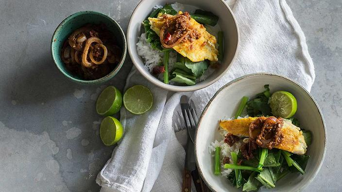

|Sambal Fish|
Home

Description
Sambal is one of those ingredients that makes almost anything it touches good.
Further experimentation is required but I'm not convinced Sambal ice-cream
wouldn't work. I can say with confidence that Sambal fish makes a dish worth
dying for...assuming you're a fish and don't mind being eaten by strangers.
Ingredients
- 600 g firm white fish fillets
- 1 tsp ground turmeric
- ½ tsp salt
- vegetable oil, for cooking
- steamed rice, steamed Asian greens and
lime halves, to serve
Sambal
- 16 medium dried chillies, stem ends removed
- 1 tbsp tamarind pulp
- 4 cloves of garlic, peeled and chopped
- 150g large brown shallots (about 4), peeled and chopped
- 250g ripe tomatoes (about 2), chopped
- 2 ½ tsp shrimp paste (belacan), chopped
- 2 ½ tbsp vegetable oil
- 1 red onion, cut into thin rings
- 1 tbsp (firmly packed) shaved palm sugar
Recipe
- For the sambal, tear each chili in half and shake out most of the seeds.
- Place the chillies in a bowl, pour over enough boiling water to just
cover then stand for 30 minutes or until the chillies are soft.
Drain well.
- Place the tamarind pulp in a small bowl, pour over 80 ml (⅓ cup)
boiling water and stand for 20 minutes or until tamarind is soft. Strain the
tamarind mixture through a sieve into a bowl, squeezing the solids
with your fingers to extract as much liquid as possible - discard the
solids and set the tamarind puree aside.
- Drain the chillies well then combine in a food processor with the
garlic, shallots, tomato, belacan and sugar. Using the pulse button,
process until a coarse paste forms, stopping occasionally to scrape
the mixture down.
- Heat the oil in a wok over medium. Add the chilli mixture then cook,
stirring often, for about 12 minutes or until the most of the liquid
has reduced.
- Stir in the onion and sugar and cook, stirring often, for 5 minutes
or until the onion has wilted and the sugar has dissolved.
- Add the tamarind puree, season to taste with sea salt and freshly
ground black pepper then cook the sambal, stirring, for another
5 minutes or until any excess liquid has evaporated and the mixture
is thick. Keep warm.
- Meanwhile, use paper towels to dry the fish. Combine the turmeric
and salt in a bowl, add the fish and then rub the mixture into
the fish on both sides.
- Heat the oil in a large, heavy-based frying pan over medium-high
then add the fish. Cook for 3 minutes or until golden then turn
and cook for another 3 minutes or until cooked through.
- Transfer to a warmed serving dish, spoon sambal over each piece of
fish then serve with steamed rice, greens and lime.